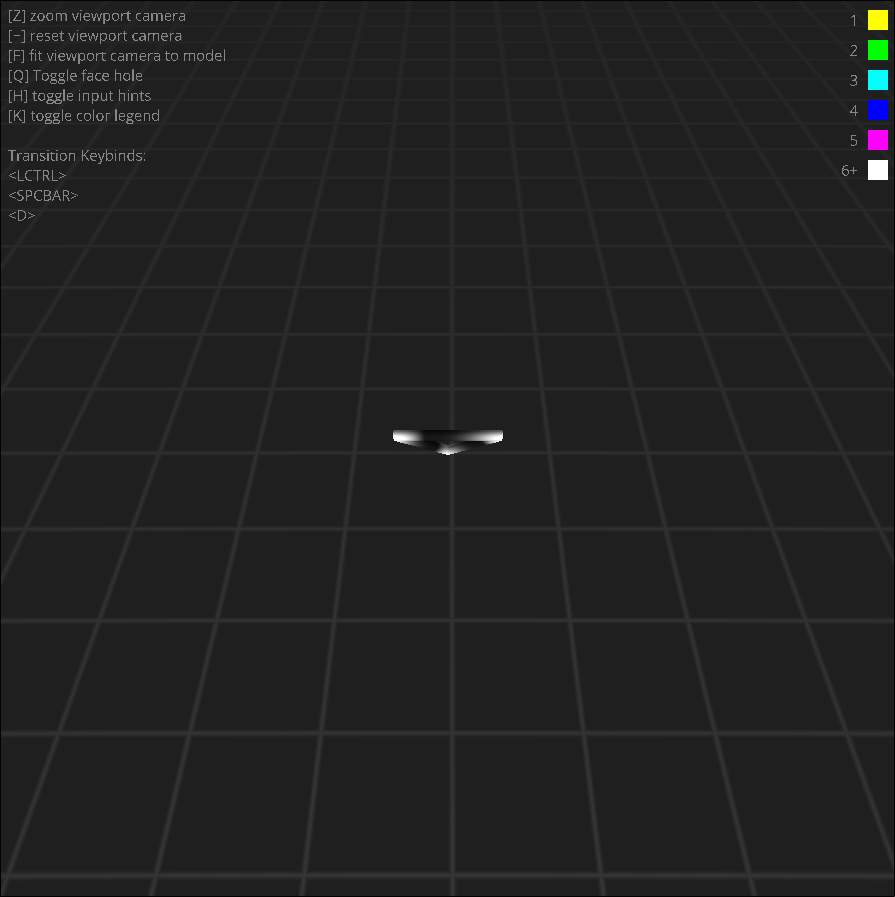
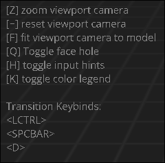
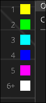
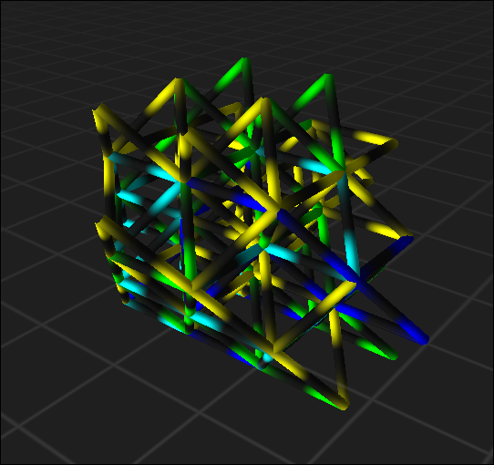

Main Viewport
Small screen, big data!
Broad Overview
The viewport is located in the center of the Flow UI. Here you can visualize your configuration! There's also some additional information that you can view here, such as keybind hints and a color key for reference.

If this looks confusing, not to worry! We'll explain each part of the viewport in the following sections.
Keybind Hints
On the top left of the viewport, you'll see keybind hints.
These hints will tell you what keys you can press or hold down next to perform an action! If you forget a keybind that you want to use, just turn these on and explore it!

The first list of keybinds are inputs you can actively press, and what they do! For example, if you press F, the active camera will zoom to fit the current geometric structure!
The second list are transition keybinds. This means you should hold down these keys before pressing another. For example, you need to hold down left control while pressing T in order to enter triangle select mode. As you press these transition keys down, the first list of keybinds will update to reflect what available keybinds are now available at the next press!
Color Key
On the top right of the viewport, you'll see a color key.
This color key will help you identify the flow values in your visualization!

Each color corresponds to the absolute value of an edge's flow. The first 5 values are for each respective flow value, and any value above 6 will be grouped up into the white color. If an edge has no flow, it will be invisible.
Main Visualization
Within the viewport, you'll see some abstract geometric structure! This is your current visualization of your configuration. This may look widly different based on your configuration, and how you've chosen to visualize it. To learn more about how to visualize this best for you, read the simulation page.

You may be curious on exactly how to navigate your visualization. Here's some helpful basic keybinds you might find useful!
SPACEBAR + Drag with right click
Rotate the camera about the current focus point (default is the origin)
SPACEBAR + Drag with left click
Pan the camera across the current view plane
SCROLL or HOLD Z + Move mouse
Zooms the camera in or out
PRESS F
Zooms the camera automatically to fit the entire geometric structure
PRESS ` (the grave/tilda key)
Resets the camera back to the scene origin